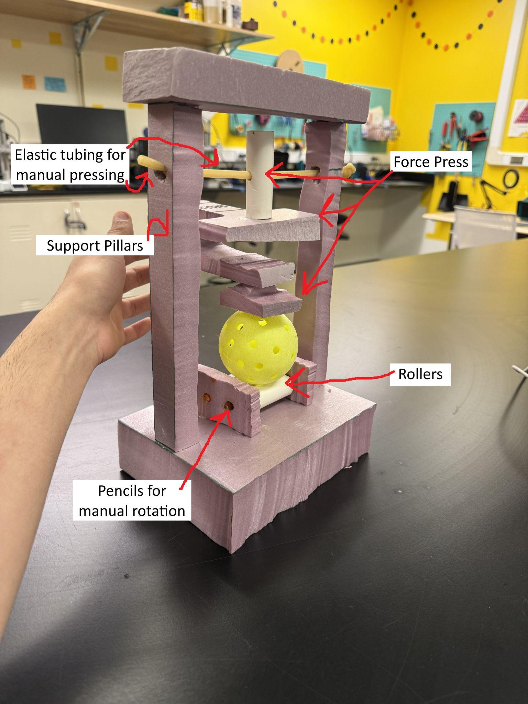
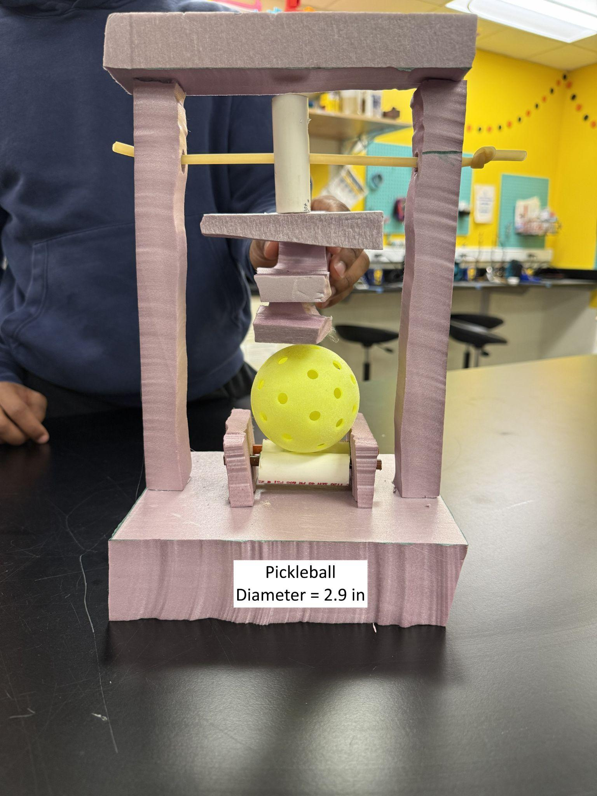
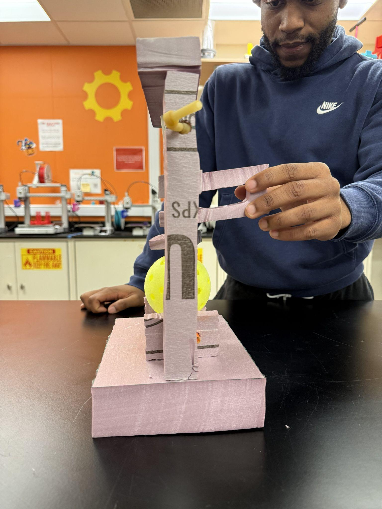
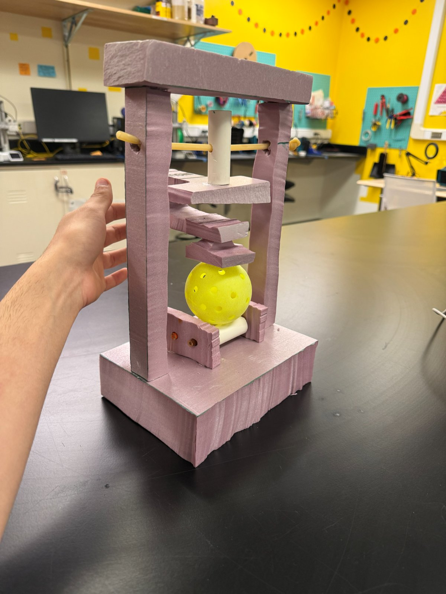
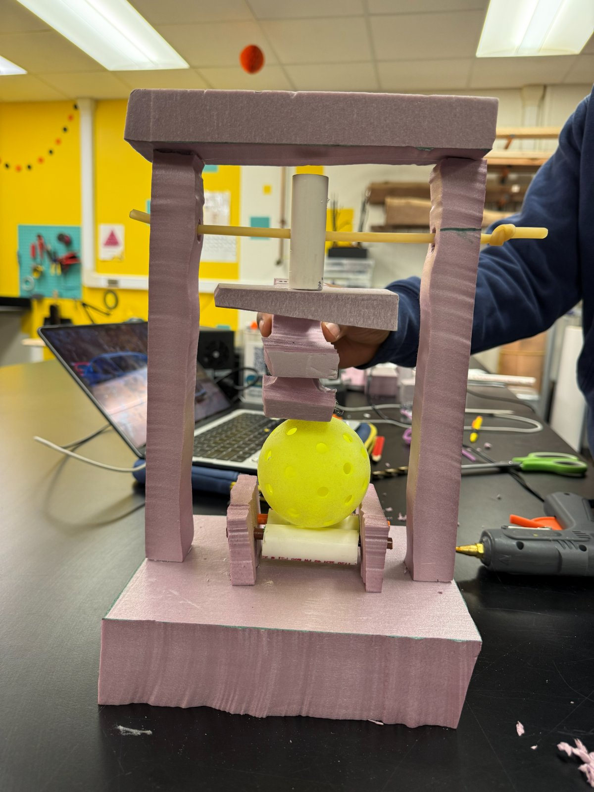

Gate Review 2 · Concept & Prototyping
Proposed Concept & Alpha Prototype
DinkCheck measures what players can't feel: how much stiffness a ball has lost, and where. It is the refined Rolling Compression Station (A′) inside an enclosed two-tone housing. This page describes the concept in enough detail to build it, shows how its subsystems connect and how a test runs, and documents what the full-scale alpha prototype taught us.
Proposed concept


Figure 14. DinkCheck concept render (team, AI-assisted): door closed (left) and open (right). The compression drive sits in the dark upper shell; the ball rests on the roller cradle behind the windowed door in the white lower shell.
Form and configuration
A compact upright housing in two parts. The dark upper shell encloses the compression drive: the motor, lead screw, carriage, load cell and plate. The white lower shell holds the two-roller cradle and opens through a front door hinged on the left, with a round window so the player can watch the test and a shallow finger-pull recess beside the door's free edge. A lime seam runs over the top and down the front, and a lime-ringed start button and slim readout sit on the top face. Inside, the mechanism is the Concept A layout: 74 mm ball on 20 mm rollers 54 mm apart, a 40 mm plate and a 5 mm hard stop (Concept A).
Intended user and use context
The individual competitive player who brings their own balls to open play, league nights and tournaments, and tests a ball on a bench or table at the court before play or between games. The alpha prototype showed that the current mechanism, about 8 in. tall, is slightly too big to carry in a pickleball bag, so the housing has to shrink toward the 2.5 L and 2 kg targets.
Operating principle
The plate squeezes the ball by a fixed distance δ, set by the motor's step count, while the load cell measures force F. That gives two damage signals at each position: stiffness, k = F ÷ δ, and hysteresis, the area between the loading and unloading curves. A worn ball is softer and dissipates more energy, so k falls and the loop widens; Pickleball Science measured stiffness falling about 10% per hour of play [1]. Testing 4–6 positions around the ball adds a third: a reading far from the others flags a local soft spot, or a ball sitting on a hole or seam. Frame and load-cell flex are measured once with a steel ball and subtracted, and each ball is compared with a new ball of the same model near the same temperature, since stiffness changes strongly with temperature [2].
Functions
Primary: secure the ball, apply a fixed-distance squeeze, measure force, compute stiffness and hysteresis, decide playability, display the result. Supporting: rotate the ball between squeezes, home the plate, limit force and travel, enclose the test, and hold every part in alignment (Functional Decomposition).
Subsystems and components
| Subsystem | Components | Role |
|---|---|---|
| Housing | Dark upper shell; white lower shell; left-hinged door with round window; finger-pull recess (about 20 × 12 × 4 mm); feet | Enclose the mechanism; keep fingers out of the squeeze; let the player see the test |
| Ball handling | Two Ø20 × 60 mm rollers with 30A silicone sleeves, 54 mm apart; GT2 belt; roller stepper | Cradle the ball and roll it between squeezes |
| Compression | NEMA 17 stepper with integrated T8 lead screw; carriage on linear bearings; Ø40 aluminium plate; 5 mm hard-stop collar | Lower the plate and squeeze a fixed distance |
| Force sensing | 20 kg straight-bar load cell in the full force path; HX711 amplifier | Measure the squeeze force through loading and unloading |
| Control | Microcontroller; stepper drivers; homing endstop; temperature sensor | Sequence the test; compute stiffness, hysteresis and the outlier check; grade the ball |
| User interface | Lime-ringed start button and slim readout on the top face | Start the test and show Playable or Non-playable |
Table 15. DinkCheck subsystems. Mechanism components are from the Concept A CAD model and parts list [3]; housing features are from the concept render [4].
Material, energy and information
Material: the ball enters through the door, is squeezed and rolled, and leaves unchanged. Energy: electrical power drives two steppers; their torque becomes plate force through the lead screw and ball rotation through the belt and rollers. Information: the load cell turns force into a millivolt signal, the amplifier digitizes it, the controller combines it with the step count, and the readout turns the grade into light the player reads; the window lets the player see the squeeze itself.
Interface, controls, feedback and affordances
Two user actions: load the ball, press start. The finger-pull recess shows how the door opens, the cradle shows where the ball goes, and the single top button is the only control. Through the window the player sees the plate press and the ball turn, so they know the test is running, and the readout states Playable or Non-playable in words, so the result does not depend on color perception.
Aesthetic and emotional qualities
The two-tone shell and lime seam, carried over from the CubeClamp, read as a premium consumer device rather than lab equipment, which matters in a casual, social sport. The window makes the verdict feel earned: the player watches the ball being pressed position by position, which serves the emotional need behind the purchase, confidence that the ball is fit to play.
Preliminary materials and manufacturing
Mechanism: off-the-shelf motors, lead screw, bearings and electronics, with mounts 3D-printed in the makerspace; about $130 in parts against the $400 prototype budget [5]. Housing: molded or printed shells for the product version; the volume target is a ≤ $33 unit cost against the $100 retail price.
Safety and accessibility
The plate–cradle pinch point sits behind the closed door, a software force limit stops the squeeze, and a collar caps travel at 5 mm, below the 0.25 in. displacement of the ASTM F1888 compression test that the USA Pickleball standard uses [6]. One button and a word-based result suit older players and players with limited dexterity or color vision; the readout's legibility still has to be tested.
Benefits and differentiators
A measured answer instead of feel; softening detected before cracks appear; two damage signals at several positions, so local soft spots are found; a test the player can watch; and the first tester designed for balls in play rather than for paddles or factory quality control.
Technical assumptions and unresolved questions
- Stiffness and hysteresis predict how a ball plays well enough to grade it; not yet compared with players' judgment or the bounce test.
- Two plain rollers let the ball drift on the other axis (alpha prototype): how much multi-axial contact does the cradle need to control which spots are pressed?
- What Playable / Non-playable threshold fits each of the five common models, and how to correct for temperature.
- Whether one motor can drive both functions, and how small the housing can get while staying stiff enough.
- Whether a full test fits in 20–30 s, and how the unit is powered courtside.
Architecture and layout

The key interface is the force path: motor, lead screw, carriage, load cell, plate, ball, rollers, frame. Every part in that path that flexes adds to the measured deflection, which is why the load cell carries the whole force and the frame is calibrated with a steel ball. The controller is the only link between sensing and actuation, so contact detection, the force limit, the outlier check and the grade are all software decisions that can be tuned without changing the hardware. The door is the one material interface with the player.
Operation, step by step
The six frames below show one complete test. The player performs two actions, loading the ball and pressing start; DinkCheck does the rest, testing 4–6 positions per ball against a 30-second target.
Figure 18. Operating sequence, front view (computer-drawn). Blue arrows show motion; the tag at upper right is the readout.
Maintenance, storage, transport and disposal
- Calibration. After assembly, and whenever the unit is knocked, a steel ball is tested so the controller can subtract frame and load-cell flex; a new ball of the player's usual model sets the reference.
- Cleaning and wear. The silicone roller sleeves pick up court grit and are the main wear part; they are reached through the door for cleaning or replacement.
- Transport and storage. The plate returns home after every test, clear of the cradle, and the closed door keeps the cradle clean in a bag. Reaching the 2.5 L / 2 kg targets is open work.
- Disposal. Shells, mechanism and electronics should separate with ordinary tools for recycling; the electronics stay one removable module.
Alpha prototype










Purpose and questions
The alpha prototype gives a physical, full-scale representation of the system, to communicate the relationship between the two main subsystems, the force press and the ball roller, and to frame the system's size against an actual pickleball. It was built to answer three questions:
| Question | Answer |
|---|---|
| Do the ball, rollers and plate fit at 74 mm / 54 mm and meet on centre? | Yes |
| Will a holed ball roll without slipping? | No |
| Is the footprint acceptable to carry? | Slightly no |
Table 16. Questions the alpha prototype investigated, and what it showed.
What was represented
The approximate shape and size of the force press, and the shape and size of the rollers that rotate the ball. The rollers were given real rolling function by supporting them between blocks on pencils as shafts. The force press was given vertical movement by drilling a hole through its shaft and suspending it on elastic tubing between the two pillars.
What was omitted or simplified
- Motors. Their locations were omitted because they were not needed to show how the two subsystems relate to each other and to the ball; the vertical travel of the press and the rotation of the rollers were simplified to manual action.
- Guide shafts. In the product, a small shaft inside each pillar would guide the press up and down, driven by a belt and pulley, gear train or actuator; it was left out as unnecessary for the spatial question.
- User interaction. Inserting the ball into its final position, pressing a start button and reading a display were not represented.
- Sensors and code. All sensing, signal generation and data processing were omitted, because the relationship under investigation was physical rather than technical.
Scale, materials and fidelity
A 1:1 scale was necessary to show the true relationship with a pickleball. The prototype is XPS rigid foam insulation board, PVC pipe, elastic tubing and pencils, joined with hot glue and shaped with a foam-board cutter, all available in the Mechanical Assembly Room and the C-SED Lab on the first and third floors of the G.G. Brown Laboratory. Fidelity is deliberately low: the question was spatial fit, not technical performance.
What we learned
- Rotating the ball on just two cylindrical rollers creates random rotation about the perpendicular axis: when the rollers turn the ball forward and back, it also drifts left and right. That makes it hard to know whether the spots the system intends to test are the spots actually being pressed.
- At about 8 in. tall, the system as estimated is a little too big to carry comfortably in a pickleball bag.
Assumptions supported or challenged
Challenged: that two rollers alone can secure and index the ball. The prototype supports the need for a more sophisticated securing and rolling structure, with multi-axial contact, to control precisely which faces of the ball are pressed. Challenged slightly: that the current size is acceptable to carry.
Limitations
Because the rollers were turned by hand, the prototype cannot show whether the same roller speed and run time would always produce the same ball rotation. It also cannot show the outer shell, the sizing and placement of the electronics, or the user interaction.
What the next prototype must test
- Motor-driven press and rollers, to measure how well the system controls the ball's movement and which spots it presses.
- A securing cradle with multi-axial contact that stops cross-axis drift.
- Roller slip and total test time on the built station.
Gate Review 2 recommendation
DinkCheck is the strongest of five meaningfully different concepts on the needs that decide whether the product works, the only one that measures several damage signals at several positions, and the more buildable of the two finalists (Downselection). The alpha prototype confirmed the core geometry and showed what detailed design must fix: ball control on the rollers and overall size.
Most important next steps: (1) build the motorized prototype with a multi-axial cradle and measure roller slip and test time; (2) drop-test 20 new and used balls to confirm at least 90% agreement with the bounce test; (3) run 50 tests on control balls to confirm at most 0.5 in. of rebound change; (4) shrink the frame and test one motor for both functions. If agreement falls short, the CubeClamp's curve-based approach is the fallback.
References
- [1] Pickleball Science, “How Many Games Will a Pickleball Last?” Mar. 15, 2023. pickleballscience.org
- [2] Pickleball Science, “How Does Temperature Affect a Pickleball?” 2024. pickleballscience.org
- [3] Team 1, Concept A CAD model and “DinkCheck Compression Tester: Parts List,” ME 455, Oct. 2026.
- [4] Team 1, DinkCheck concept renders (AI-assisted, v6), ME 455, Oct. 2026.
- [5] Team 1, “DinkCheck Downselection (condensed),” ME 455, Oct. 26, 2026.
- [6] USA Pickleball, Equipment Standards Manual, Rev. 3.0, Jan. 2025, rule 2.D.6; ASTM F1888 procedure as described in U.S. Patent 8,771,114. usapickleball.org